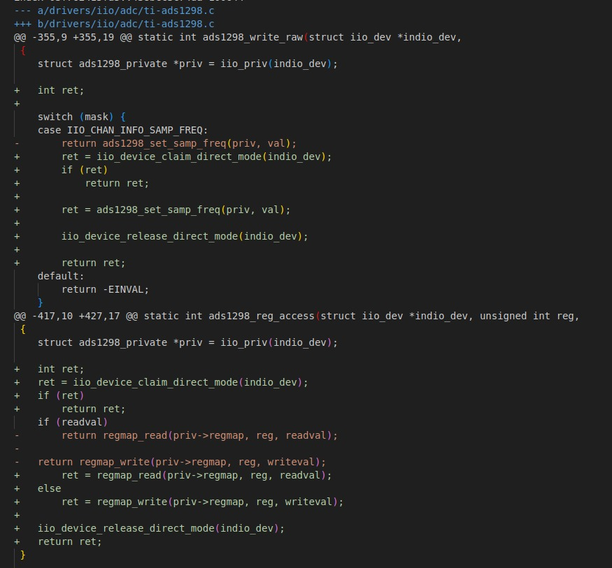
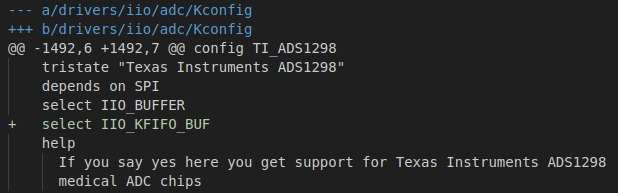

Na minha contribuição, implementei o uso de iio_device_claim_direct()
para proteger a captura de dados em modo buffer contra operações intercaladas
de leitura/escrita em registradores. O subsistema IIO define dois modos
principais de acesso aos dispositivos: o modo direto
(INDIO_DIRECT_MODE), utilizado para configuração e leituras
únicas, e os modos bufferizados (como INDIO_BUFFER_TRIGGERED),
empregados para a captura contínua de dados.
Muitos dispositivos IIO — como acelerômetros, giroscópios, ADCs e DACs —
não podem operar em ambos os modos simultaneamente, pois os mesmos caminhos
de hardware são usados tanto para a configuração quanto para a leitura dos
dados. Se um comando de configuração for enviado enquanto o dispositivo
está capturando dados de forma bufferizada, isso pode levar a problemas
como buffers corrompidos, dados de difícil interpretação e gatilhos de
interrupção desatualizados. Ao bloquear o dispositivo no modo direto antes
de realizar operações críticas e liberá-lo posteriormente com
iio_device_release_direct(), assegurei que a configuração não
interfira na integridade dos dados capturados, promovendo uma operação
mais segura e estável. Segue o diff:

Durante o desenvolvimento, encontrei um problema de compilação: o módulo
que implementei dependia de outro módulo que não havia sido declarado no
Kconfig. Para identificar esse problema, executei:
make -C "$IIO_TREE" -j$(nproc) Image.gz
Sem restringir a compilação apenas aos módulos, o kernel compilou mas
acabei quebrando a máquina virtual e tive que reinstalá-la. Depois de
revisar os tutoriais, identifiquei a forma de incluir a dependência
faltante e a adicionei ao Kconfig.

E por fim, enviei o patch por e-mail, assim como recomendado pelo tutorial,
com alterações nos arquivos Kconfig e
ti-ads1298.c do diretório ADC.